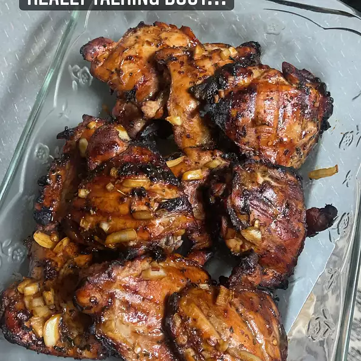

Hawaiian Shoyu Chicken

Shoyu Chicken is a popular Hawaiian delicacy and is often served with rice & mac salad.
The word shoyu is Japanese for soy sauce.
It is essentially a braised chicken dish made with chicken thighs & a shoyu-based sauce with brown sugar, garlic, & ginger.
Ingredients
- 1 cup soy sauce
- 1 cup brown sugar
- 4 cloves garlic, minced
- 1 onion, chopped
- 1 tablespoon grated fresh ginger root
- 1 tablespoon ground black pepper
- 1 tablespoon dried oregano
- 1 teaspoon crushed red pepper flakes(Optional)
- 1 teaspoon ground cayenne pepper(Optional)
- 1 teaspoon ground paprika(Optional)
- 5 pounds skinless chicken thighs
Recipe Instructions
- Whisk together the soy sauce, brown sugar, water, garlic, onion, ginger, black pepper, oregano, red pepper flakes, cayenne pepper, and paprika in a large glass or ceramic bowl.
- Add the chicken thighs, and toss to evenly coat. Cover the bowl with plastic wrap, and marinate the chicken in the refrigerator for at least 1 hour.(the longer, the better)
- Preheat an outdoor grill for medium heat, and lightly oil the grate.
- Remove the chicken thighs from the marinade. Discard the remaining marinade. Grill the chicken thighs on the preheated grill until cooked through, about 15 minutes per side.
Return to top
Return to main menu